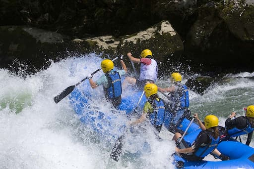
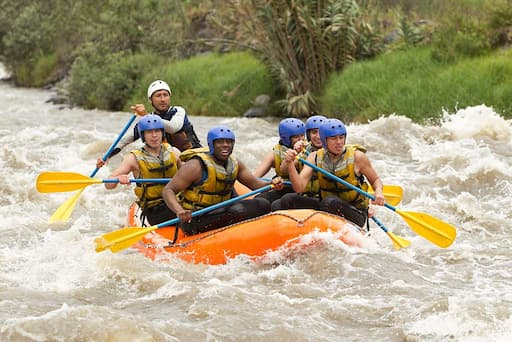
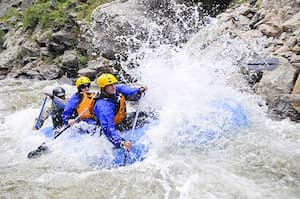

...


...
Founded in 2008 by a group of outdoor enthusiasts, Rafting Travels Co. began with a single raft and a big dream — to share the thrill of the river with others. What started as weekend trips quickly grew into a trusted adventure company known for safety, fun, and unforgettable memories. Today, we offer a range of guided rafting experiences for all skill levels, continuing our mission to connect people with nature through the power of the river.
Our team is made up of experienced guides who are passionate about the outdoors and committed to providing a safe and enjoyable experience for all our guests. We believe that every trip should be an adventure, and we strive to create lasting memories for everyone who joins us on the river.
Whether you're a seasoned rafter or a first-timer, we have the perfect trip for you. From calm scenic floats to thrilling whitewater rapids, our trips are designed to cater to all levels of experience. Join us and discover the beauty and excitement of rafting with Rafting Travels Co.
At Rafting Travels Co., we don't just offer a ride — we offer memories, stories, and connections with nature that last a lifetime.


